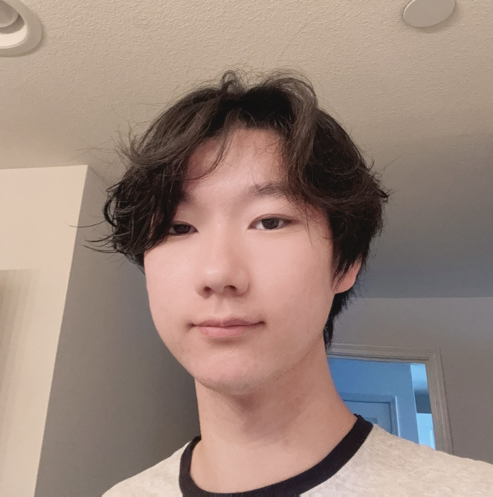

About Me
I’m Nick, an Electrical Engineering student at UCSD, focused on electronic circuits & systems.
I am most interested in analog/digital circuit and IC design, hardware design, and innovative researches.
Skills
My Journey
M.S. Electrical Engineering
UC San Diego
Pursuing advanced studies in electrical engineering with focus on integrated circuits and systems design. Building upon undergraduate foundation with specialized coursework and research opportunities.
B.S. Electrical Engineering
UC San Diego
Comprehensive undergraduate program covering circuit analysis, digital systems, signal processing, and electronics. Developed strong foundation in both theoretical concepts and practical applications through hands-on laboratory work and projects.
Research Intern - Cosmic Whisper
Professor Saharnaz, UCSD
Developed an educational game demonstrating and teaching concepts in optics and circuits. Created an immersive learning experience that combines hardware design with interactive storytelling, helping students understand complex engineering principles through hands-on experimentation.
Project Manager & Tech Lead
Babel Industries Corp.
Supervised the development of multiple technical projects while directly contributing to implementation. Led cross-functional teams, managed project timelines, and ensured technical deliverables met quality standards and client requirements.
Research Assistant - LabStream
Professor Saharnaz, UCSD
Contributing to the development of a remote-controlled lab environment for optics and circuitry experiments. Working on creating accessible, hands-on learning experiences that allow students to conduct real experiments remotely through web-based interfaces.
Peer Mentor
Mentor Collective
Provided guidance and support to 2 new transfer students, helping them navigate academic challenges and integrate into the university community. Focused on academic planning, resource identification, and personal development strategies.
Summer Research Intern
Professor Saharnaz, UCSD
Utilized ESP32 microcontroller for various game designs, connecting to Wi-Fi and enabling data interactions on LCDs with Google Sheets through Apps Script. Gained experience in IoT development, web APIs, and embedded systems programming.